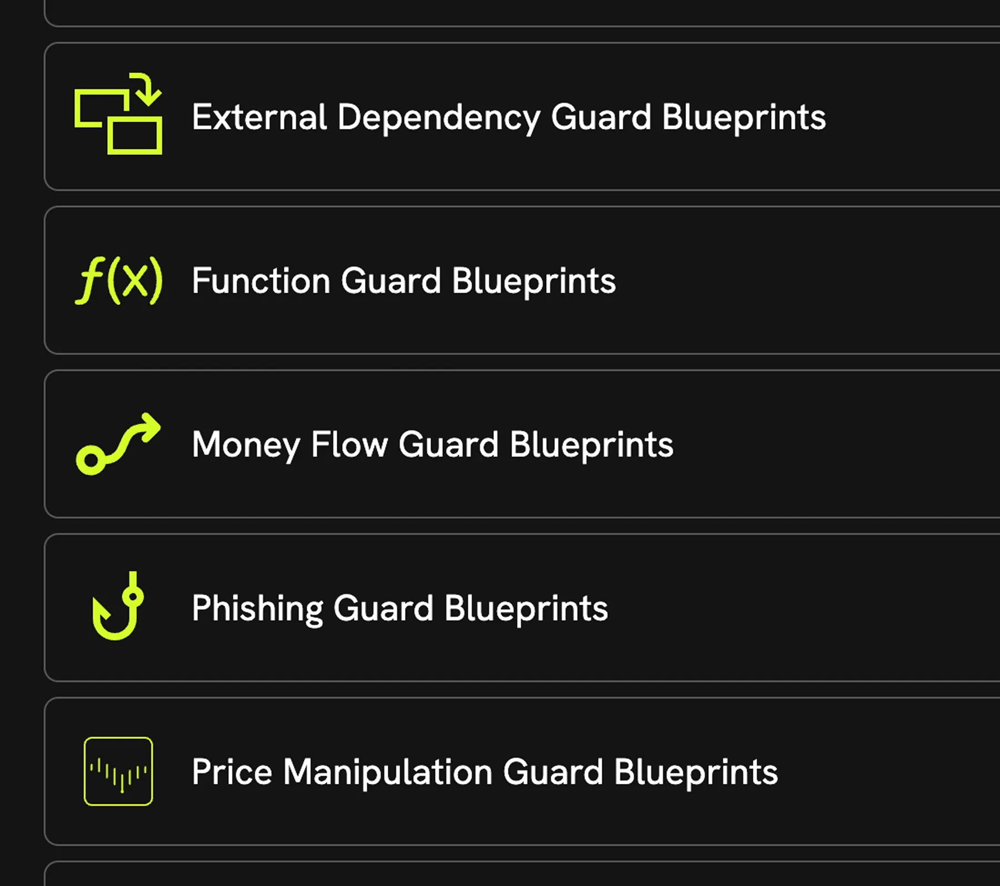
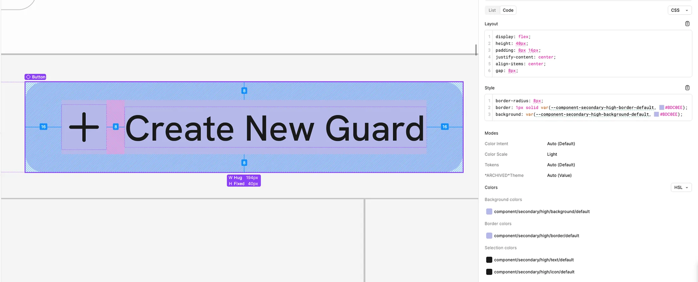
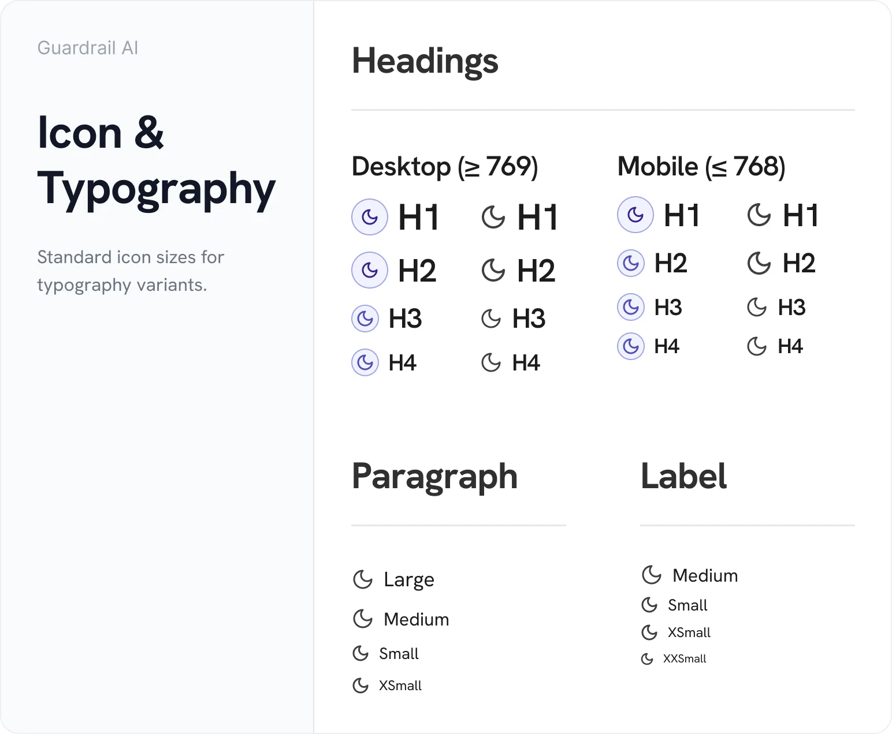
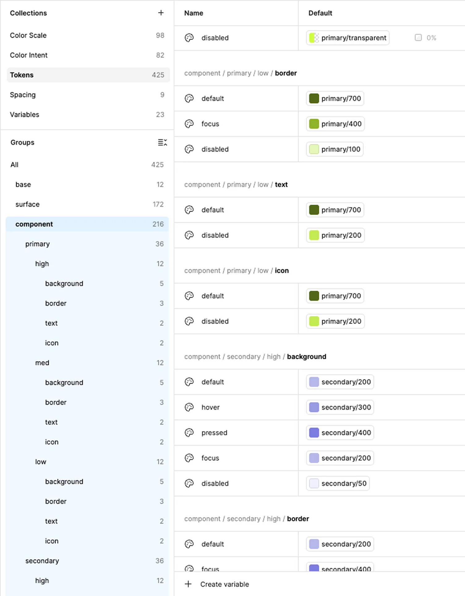

Raspberry AI: Masking on a Canvas
Multi-material masking, a mode leaving the rest of the workspace usable.
Created a design system used to redesign and build new features on.
Guardrail AI is a real-time onchain security platform that detects blockchain threats and helps teams respond. They came to us to improve the UX, build a scalable design system, and design mobile screens for a desktop-only product.
I created the design system foundation: colour, spacing, typography and writing guidelines, and tokens defined jointly with Guardrail's front-end developer for direct implementation. Over the next year we redesigned the product and shipped new features on the same foundation.
The audit turned up three things that looked like separate problems.
Colour hadn’t been assigned so much as accumulated. No rule governed what any colour meant. The severity chip (1) held up best: colour-coded with a label, passing AA in both modes. The alert notice (2) and outlined button (3) passed AA in light but failed in dark. The dark value had been set once by eye, not derived alongside its light counterpart.

Icons came from more than one library at more than one size — sharp corners beside rounded ones, a set that read as assembled, not designed.
All three were the same fault: colour, mode, and iconography decided per screen instead of assigned by role from one library. The product looked assembled, not designed, because that’s how it had been put together.
The palette was raw material, and a semantic layer went on top, defined together with Guardrail’s front-end developer.
Every token is described by:
A full path might read component / secondary / high / background / default, the default background for a CTA in the secondary brand colour, weighted to draw the eye first.
Mode became a further axis of the same taxonomy, not a separate pass. Every token holds a light and dark value defined and checked together. Each value is verified against AA, so a failing token is caught before it reaches a screen.
The cost is that the taxonomy has to be learned before it’s used: five dimensions, long names, and a designer who wants one colour has to answer several questions to get it. Harder to use casually, much harder to use incorrectly. AAA was the aim on text, but reaching 7:1 would have narrowed the palette, so some settled for AA instead, keeping the range the product needed.
The typical answer for a dense table on a small screen is to replace it with stacked cards or hidden columns. I kept the table, horizontal scroll and all, and added a list view beside it.
Tables exist because comparison across columns is the task. Collapse it and you've removed what the table was for, not made it mobile. However, at a phone width a table is genuinely hard to read, so the list view covers other needs that aren't comparison.
The cost is two views to maintain, and a decision the viewer now has to make, minimized by the breakpoints:

Components started from Shipfaster UI, adapted per client, then re-tokenized with Guardrail’s system rather than drawn from scratch.
One scale, desktop and mobile, holding proportions across screen sizes and across three designers’ work without anyone setting values by hand.

Typography guidelines and writing rules defined so copy stopped drifting between screens. Icons standardized with Lucide at a defined sizing scale. For most cases, size didn't need to be decided again.
The severity chip, alert notice, and outlined button now pass AAA in both light and dark mode.
Screens from across the product, before and after the redesign.

Guardrail's front-end developer and I defined the token taxonomy and naming together. A design library and codebase that need a translation layer is where the system comes apart. One vocabulary meant nothing to reconcile later.
The point wasn’t a cleaner handoff. It was that engineering could stop checking: no single-use tokens to lose, no verifying whether a value was right.
The new system and redesign shipped before the acquisition.
The components the audit flagged (severity chip, alert notice, outlined button) now pass AAA in both light and dark mode. Every other component checked across the product passes at least AA, and most pass AAA.
The system was adopted immediately by the other two designers and extended for a year, covering cases I hadn’t designed for and holding. Every new feature Guardrail shipped was built on this foundation.
It also survived the acquisition. Guardrail's front-end developer said it became the foundation for the next iteration of Rain's design system, with developers now writing around 90% less custom styling than before.
“I worked with Nicole during my time as the lead frontend developer at Guardrail. She was instrumental in the creation of Guardrail's design system, which has since been transformed into the next step of the evolution of Rain's design system. A faulty foundation is something I knew would hurt in the long run – working with Nicole and her team helped us build a system that we could rely on. With it, developers are writing around 90%(!) less custom styling than usual, enabling us to ship stuff speedily!”
 Dakota St. Laurent, Lead Front-End DeveloperGuardrail AI, now a Rain company
Dakota St. Laurent, Lead Front-End DeveloperGuardrail AI, now a Rain company
We built on Shipfaster UI and adapted it, so most of the three weeks went into re-tokenizing components and reassigning variables one at a time, rather than designing them. I'd do that for fewer: progress bars and switches could have waited. I'd still build the system alongside the redesign, just less up front, letting later screens decide what else it needed.
Multi-material masking, a mode leaving the rest of the workspace usable.

A guided tutorial system built around workflows to reduce onboarding calls.